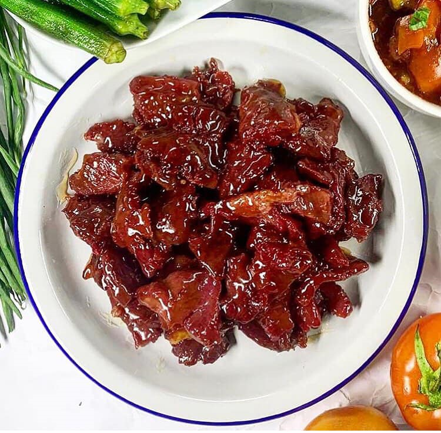

Cuisinang Capampangan: Manyaman!

Pindang Damulag
Ingredients
- 2 lbs carabao meat (or beef)
- 1 cup vinegar
- 1 tablespoon salt
- 5 cloves garlic, minced
- 2 bay leaves
- 1 teaspoon peppercorns
- 4 cups water
Time
- Prep Time: 15 minutes
- Cooking Time: 2-3 hours
- Total Time: 2.25-3.25 hours
- Servings: 4-6
Procedure
- Cure Meat: Marinate meat in vinegar and salt for 1-2 days.
- Cook: Rinse meat and place in a pot with garlic, bay leaves, peppercorns, and water.
- Simmer: Cook over low heat until meat is tender, about 2-3 hours.
- Season: Season with salt and pepper.